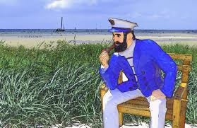

Marinheiros
Marinheiros são profissionais que trabalham em embarcações marítimas, desempenhando uma variedade de funções essenciais para a operação, manutenção e navegação dos navios. Eles podem atuar em diferentes tipos de embarcações, como navios comerciais, de pesca, militares e recreativos.

Funções e responsabilidades
- Navegação: Marinheiros ajudam a guiar o navio usando instrumentos de navegação, mapas e tecnologia de GPS. Eles monitoram a rota e fazem ajustes conforme necessário.
- Manutenção: São responsáveis pela manutenção do navio, incluindo limpeza, reparos e inspeções. Isso pode envolver a pintura do casco, conserto de equipamentos e manutenção de sistemas mecânicos.
- Operação de Equipamentos: Operam guindastes, guinchos e outros equipamentos de convés para carga e descarga de mercadorias.
- Segurança: Garantem a segurança a bordo, executando exercícios de emergência e garantindo que todos os equipamentos de segurança estejam em boas condições. Eles também podem atuar como membros de equipes de combate a incêndios e resgate.
- Vigília: Realizam turnos de vigília para monitorar a navegação e as condições do mar, garantindo a segurança contínua da embarcação.
Formação e habilidades
- Educação: Muitos marinheiros frequentam escolas náuticas ou academias marítimas para obter formação especializada. Isso pode incluir cursos de navegação, engenharia marítima e segurança no mar.
- Certificações: Marinheiros precisam de certificações específicas para operar em diferentes tipos de embarcações e realizar determinadas funções. Estas certificações são geralmente emitidas por autoridades marítimas nacionais.
- Habilidades: Além das habilidades técnicas, marinheiros precisam ser bons em resolução de problemas, comunicação e trabalho em equipe. A capacidade de lidar com condições adversas e estresse também é essencial.
Cultura e Tradições
- Uniformes: Marinheiros geralmente usam uniformes que indicam seu posto e função a bordo.
- Tradições: Há muitas tradições e superstições no mundo marítimo, como cerimônias para batizar novos navios e costumes para trazer boa sorte na viagem.
- Jargão: O vocabulário marítimo é rico e específico, com termos e expressões únicos que são parte integrante da cultura dos marinheiros.